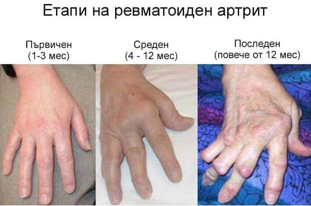
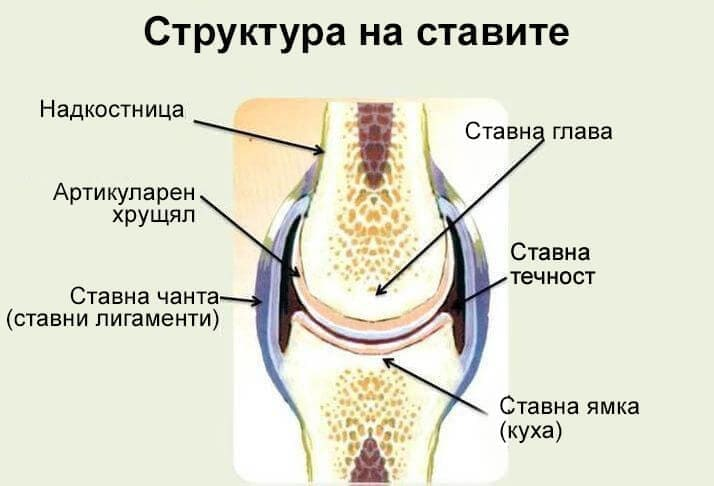
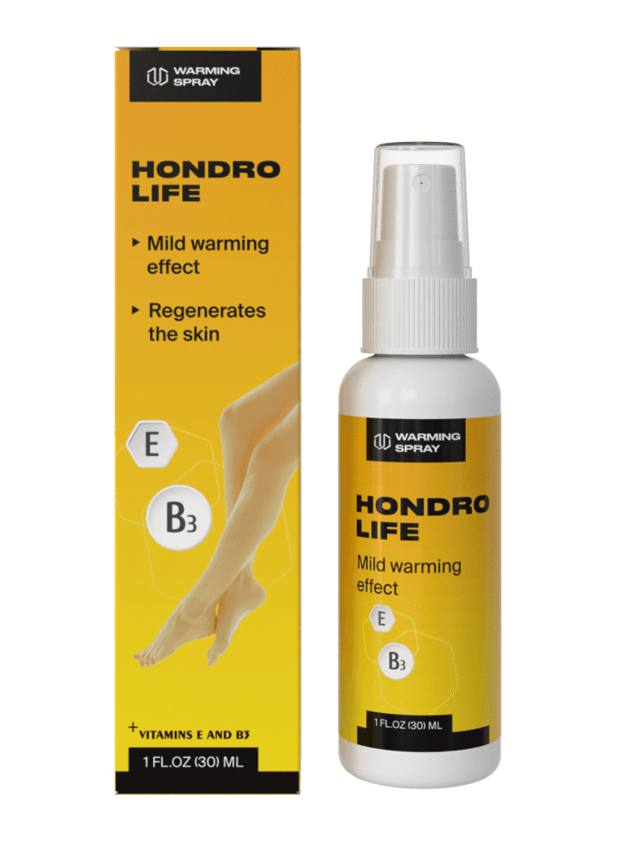
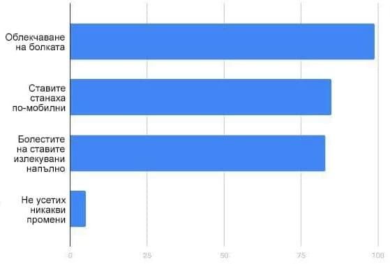
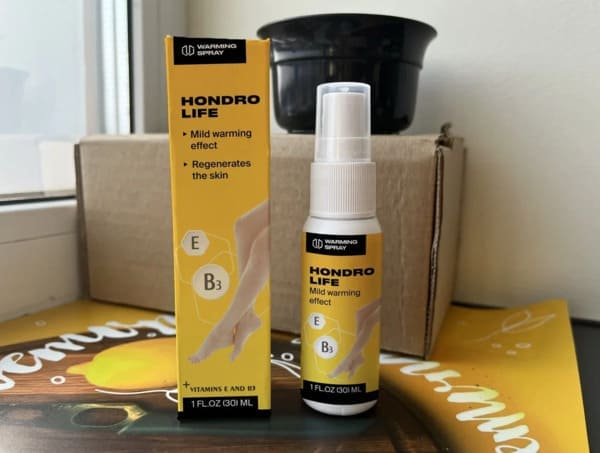

Веско Чолаков
Български ревматолог, доктор на медицинските науки, професор, председател на българската обществена организация "Асоциация на ревматолозите в България", завеждащ отделението по ревматология, ръководител на катедрата по ревматология, автор и съавтор на повече от 500 публикации, включително монографии.
Медицинска практика: повече от 30 години.
Веско Чолаков смята, че подходът на повечето ревматолози към лечението на ставни заболявания, като артрит, артроза, остеохонодроза и други, е коренно погрешен. Председателят на Асоциацията на ревматолозите в България заявява, че основното средство в борбата със ставните заболявания е собственото ни тяло. „Възможно е болестта да сепреммахне, но за това е необходимо да се използват вътрешните сили на организма,но съвременните хондропротектори не могат да го направят“, каза ни лекарят.
Редакцията на портала „Новини от медицината“ се свърза с главния ревматолог в страната, веднага след конференцията му в Копенхаген, на която бяха обсъдени иновативните методи за лечение на ставите, и поиска интервю.
- Здравей, Веско Чолаков. Сега всички говорят за ставни заболяваниия. Нима толкова много хора страдат от тях?
- Чудовищно количество! Ставните заболявания са може би най-често срещаните заболявания на 21-ви век. Според статистиката над 55% от населението на планетата има някакво смущение в ставите. Тоест всеки втори страда от тези заболявания! И ако по-рано беше необходимо да се каже, че ставните заболявания принадлежат на пенсионерите, то днес и младите хора страдат от тях. Причината е в нашия начин на живот. Жителите на градовете са се „отучили“ от равномерни натоварвания. Някои са без движение от сутрин до вечер, а други дава всичко възможно от себе си в спортните зали, наранявайки ставите.
- Как да определите дали човек има заболяване на ставите? Какви симптоми могат да показват това?
- Има доста обширен списък от симптоми, но основните от тях са:
- Болка по време на движение, както и в покой;
- Хрустене на ставите;
- Човека е стана по-малко подвижен, чувства се ограничено;
- Ставите са с променеб външния вид, деформирани са;
- Зачервена кожа около ставите;
- Има оток в района на ставите;
- Рязка болка в големите пръсти на краката;
- Болки в колената;
- Наднормено тегло;
- Чести простуди;
- Има уплътнения в началото или в средата на пръстите;
- Лицето трудно изпълнява незначителна работа;
- Генетична предразположеност;
- Нисък имунитет;
- Повишена температура;
- Повишено потооделение;
- Усилено сърцебиене;
- Кръвоизливи от носа;
- Болки в корема;
- Бледо лице.
Ако човек има поне 3 от горните симптоми, той страда от ставно заболяване. Е, ако човек постоянно чувства болка и скованост - това е тревожен сигнал, че ставата може да откаже всеки момент.
- Ако ставите на човек откажат, може ли да се излекува? Могат ли хондропротекторите или мехлемите на този етап от заболяването да му помогнат?
- Хондропротекторите са вече от миналия век! Те не са в състояние да излекуват болестта, но могат само временно да подобрят състоянието на пациента. Не е необходимо да се говори за други хапчета и мехлеми - лекарите ги предписват за облекчаване на болката, а при артрит и артроза те са адски. Но ставни заболявания могат да бъдат излекувани! Само че не като приемате хапчета, а от вътрешните сили на тялото.
- Как е възможно това?
- Сега ще обясня. Трябва да разберете, че когато ставата е „болна“, се случват две неща: или нелекувана инфекция попада в нея и това е артрит, или хрущялът на самата става, меката съединителна тъкан между двете кости, се износява, става безполезен и това е артроза. За да излекувате артрита, трябва да дезинфекцирате ставата, да „убиете“ патогенната микрофлора по прост начин. И за да излекувате артрозата, трябва да подобрите кръвообращението в ставата. Когато притокът на кръв към ставата се подобри, меките й тъкани ще започнат да получават хранителни вещества и витамини, които ще изграждат нови клетки. Така съединителната тъкан ще бъде възстановена.
- Как тогава да активирам всички тези процеси? Има ли специални инжекции или операции?
Всичко е много по-просто. Миналата година Българската асоциация на ревматолозите, заедно с нашите американски колеги, измисли иновативно лечение на ставни заболявания. В нашата нова формула сме включили „златните“ съставки, които са били използвани за лечение на болки в ставите във всички времена. 5 години и 1,8 милиона долара бяха изразходвани за изследвания. Резултатът беше изобретяването на революционно средство - спрей .
Какво е включено във вашият "златен" състав? Как действа той?
- Спрей се състои изключително от естествени съставки. Основният компонент на спрей е прополисът, лечебните свойства на който дълго време не са били изследвани. Сега знаем, че прополисът е един от най-мощните антиоксиданти, естествен антибиотик, който може ефективно да се справи дори с най-сериозните инфекции. Прополисът също засилва кръвообращението (точно това, за което говорих), увеличава количеството хранителни вещества, които влизат в меките тъкани на ставата. Благодарение на това се възстановява костната и хрущялната тъкан.
Витамини Е, В3 - Елиминира образовавнията, подхранва, тонизира, подпомага регенерацията на тъканите.
Пантенол, алантоин - Спира кървенето, подпомага образуването на защитен слой върху възпалените тъкани.
Етерични масла от мента, канела, евкалипт - Предотвратява разрушаването на ставите и сухожилията, облекчава болката в ставите, подхранва съединителната тъкан.
Екстракти от дяволски нокът, арника - Увеличава подвижността на ставите, подобрява притока на кръв.
Глюкозамин и хондроитин - Укрепва хрущялите, сухожилията, лигаментите, намалява възпалението и отока, подпомага активната регенерация на хрущялите.
- Оказва се, че това наистина е мощно средство. Но никога не сме го срещали в аптеките. Къде мога да го взема?
- Този препарат е нов. Клиничните му изпитвания са приключили едва наскоро и са получени всички лицензи и сертификати. Засега, поради трудността на навлизането на фармацевтичния пазар в България, спрей се продава само на уебсайта на официалния производител, който купи нашата рецепта и патент. Производството на спрей е доста сложно и скъпо, затова цената е висока, НО се стремим всеки български гражданин да се грижи за себе си и да излекува ставите си веднъж завинаги, затова на всеки два месеца Асоциацията на ревматолозите на България съвместно с производителя на спрей организира благотворителна акция: нашата асоциация купува всички упаковки с спрей, така че жителите на България да могат да си купят спрей само за 50% от стойността й. По този начин ние предоставяме на разположение единственото средство до момента, което наистина лекува ставите.
- Благодаря за интерюто, Веско Чолаков.
Новото откритие беше коментирано и от известния лекар, ревматолог, терапевт, доктор на медицинските науки - Ангел Йорданов Бонев :
Редакцията на портала „Новини от медицината“ поиска резултатите от клиничните изпитвания на спрей и ето какво показаха:
В изследванията са участвали 7984 доброволци.
Също така сравнихме спрей с действията на други спрей, таблетки и мехлеми за стави. Ето резултатите, получени (въз основа на потребителски отзиви):
| Cпрей : | Други спрей, мехлеми и таблетки: | |
|---|---|---|
| Действие: | Елиминиране на причините за болката, рестартиране на ставни функции на клетъчно ниво. | Временно обезболяващо действие. |
| Допълнителни ефекти: |
• Възстановява на притока на кръв в болните стави. • Укрепва на кръвоносните съдове. • Облекчава болката. |
Липсват. |
| Странични ефекти, вреда за организма. | Липсват. |
• Кожни прояви по време на нанасяне. • Пустуларни изригвания. • Бронхоспастични реакции. • Еритема, дерматит. |
| Принцип на работа: | Подобрява притока на кръв в областта на приложението и стимулира нервните окончания, стартира процеса на възстановяване на клетките, спира възпалителните процеси. | Анестезира обвивката, често без да прониква до желаната дълбочина без допълнителни ултразвукови влияния, загрява кожата, но не и тъканта (за мехлеми). |
| Състав: | Натурални растителни компоненти и витамини. | Диклофенак и други компоненти, получени по химмичен път. |
По този начин, дори малкото, които вече са изпробвали изцяло ново средство на ревматологичния пазар, заявяват в един глас, че спрей е определено на най-доброто, безопасно и най-важното - ефективно средство.
Поради ограничената наличност и голямото търсене на спрей , редакциятае на портала „Новини по медицина“ помолиха Веско Чолаков от името на Асоциацията на ревматолозите в България да предостави малка партия спрей за нашите читатели. Първите 70 читатели ще могат да поръчат спрей на официалния уебсайт на производителя с 50% отстъпка! Количеството на партиите на препарата е строго ограничено.
